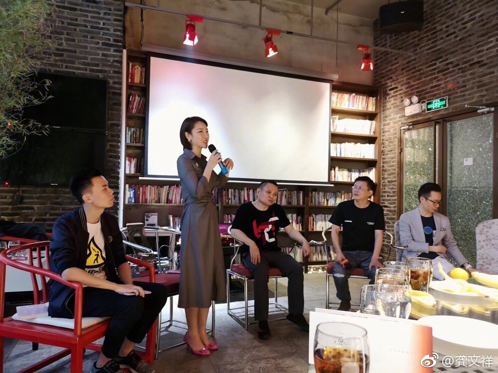

洗脑是个中性词。
@龚文祥:
微商如何洗脑？
洗脑是所有公司不愿意承认，但确实真实存在的潜规则，他不仅普遍存在，而且无孔不入，在微商领域渗透率是100%，不洗脑就不可能成功。洗脑的一般定律：
1、人类社会的共同的现象，人们会理所当然觉得，有钱，有影响力的人一定聪明，也值得相信，伪装成有钱有权的人物，你说的话普通人都相信；（为什么我支持微商人炫富就是这个道理）
2、如果你能表现出足够的自信，就能体现出强大的存在感，也能感染他人，别人看你的姿态会慢慢变成仰视；
3、如果你表现出很有主讲，甚至武断，对于自己出口的任何话都不轻易后悔，别人就会看重你，而且认为你是正确的；相反，你总是小心谨慎，字斟句酌，你将被认为是懦弱而缺乏安全感，从而得不到尊重；（一定要说武断的话，宁可是错误的）
4、最大的成功是有人讨厌你，但尽量避免一个群体全部不约而同的讨厌你，如果你成为一个阶层的对立面（如你做微商的，做电商都很讨厌你，你就成功了);当你找到自己的风格，不管有多少人表示不屑甚至攻击你，你都不要改变自己的风格；
5、任何一个成功都需要积极的心态，要永远乐观；
6、主动找上门的顾客，更容易购买你的服务与产品，销售最大的秘诀是打造你的个人魅力与信任，让顾客主动找你；
7、做一个优秀但正常的人，讨好大众，但不要过于脱离大众，不要极端的追求与众不同，脱离群众基础；让别人觉得你很棒，但又和他们是一伙的；
8，说服别人，掌握一个原则就可以了，讲清好处和坏处；利益是人们决定是否被你说服的的前提；
9，在普通大众眼里，谁说的话能产生好处，谁的话就是真理，这便是真理的真相；
10，本质上说，人人都有对成功的渴望，希望自己成功，洗脑的本质，就是利用并引导别人的成功渴望；
11、每个普通人只有三种动力：赚钱，爱情，对自己小孩的期望；只要把握这3点，就能轻易获得别人的信任；
12，千万不要妄想所有人都喜欢你及认可你，这是痴人说梦，实际上，只要有人注意你（不管是讨厌还是喜欢），你已经是成功了一步；
13，人性的本质需求是他需要尊重与欣赏，而你能及时的恰好提供，一旦满足这个条件，你就成为一个极受欢迎的人；
14、一个成功的团队，就是他的成员都是平凡人，但却一起做出了不平凡的事情，这就是洗脑者的使命；这点阿里巴巴马云做的最成功；
15，一味的直白并不是好事，坦诚是个好品质，但需要适当的包装，因为坦诚虽然满足你自己的心意，但往往不会收到你想要的结果；
洗脑是所有公司不愿意承认，但确实真实存在的潜规则，他不仅普遍存在，而且无孔不入，在微商领域渗透率是100%，不洗脑就不可能成功。洗脑的一般定律：
1、人类社会的共同的现象，人们会理所当然觉得，有钱，有影响力的人一定聪明，也值得相信，伪装成有钱有权的人物，你说的话普通人都相信；（为什么我支持微商人炫富就是这个道理）
2、如果你能表现出足够的自信，就能体现出强大的存在感，也能感染他人，别人看你的姿态会慢慢变成仰视；
3、如果你表现出很有主讲，甚至武断，对于自己出口的任何话都不轻易后悔，别人就会看重你，而且认为你是正确的；相反，你总是小心谨慎，字斟句酌，你将被认为是懦弱而缺乏安全感，从而得不到尊重；（一定要说武断的话，宁可是错误的）
4、最大的成功是有人讨厌你，但尽量避免一个群体全部不约而同的讨厌你，如果你成为一个阶层的对立面（如你做微商的，做电商都很讨厌你，你就成功了);当你找到自己的风格，不管有多少人表示不屑甚至攻击你，你都不要改变自己的风格；
5、任何一个成功都需要积极的心态，要永远乐观；
6、主动找上门的顾客，更容易购买你的服务与产品，销售最大的秘诀是打造你的个人魅力与信任，让顾客主动找你；
7、做一个优秀但正常的人，讨好大众，但不要过于脱离大众，不要极端的追求与众不同，脱离群众基础；让别人觉得你很棒，但又和他们是一伙的；
8，说服别人，掌握一个原则就可以了，讲清好处和坏处；利益是人们决定是否被你说服的的前提；
9，在普通大众眼里，谁说的话能产生好处，谁的话就是真理，这便是真理的真相；
10，本质上说，人人都有对成功的渴望，希望自己成功，洗脑的本质，就是利用并引导别人的成功渴望；
11、每个普通人只有三种动力：赚钱，爱情，对自己小孩的期望；只要把握这3点，就能轻易获得别人的信任；
12，千万不要妄想所有人都喜欢你及认可你，这是痴人说梦，实际上，只要有人注意你（不管是讨厌还是喜欢），你已经是成功了一步；
13，人性的本质需求是他需要尊重与欣赏，而你能及时的恰好提供，一旦满足这个条件，你就成为一个极受欢迎的人；
14、一个成功的团队，就是他的成员都是平凡人，但却一起做出了不平凡的事情，这就是洗脑者的使命；这点阿里巴巴马云做的最成功；
15，一味的直白并不是好事，坦诚是个好品质，但需要适当的包装，因为坦诚虽然满足你自己的心意，但往往不会收到你想要的结果；
- 